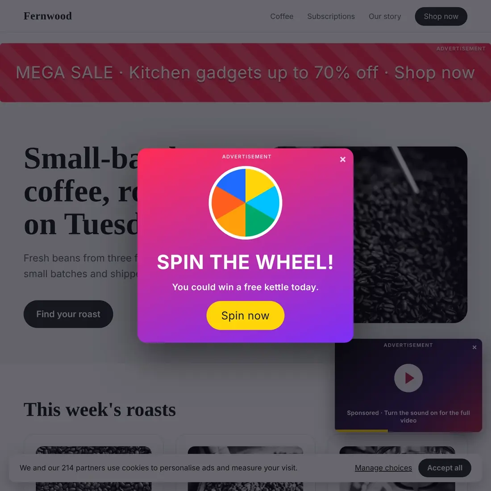
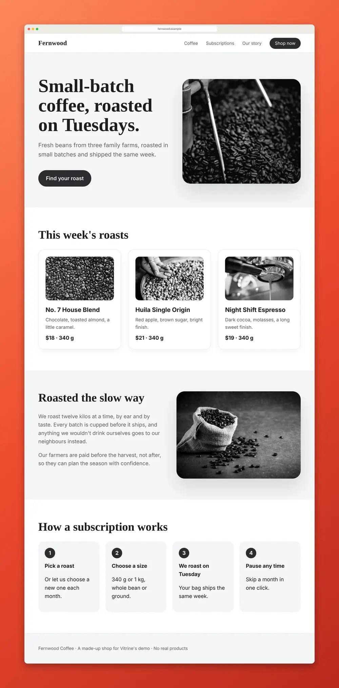

Screenshot a whole webpage without ads or pop-ups
Checked November 4, 2026. Written for Vitrine 1.2.2.
A screenshot of a whole page has two jobs: get the page top to bottom, and leave the clutter out. Chrome’s own full-size capture does the first and none of the second. Here are the ways to get both, and what each one costs you.
Way 1: Clear the page by hand, then capture
Close the pop-up. Answer the cookie banner. Scroll to the bottom so lazy images load. Then use Chrome’s built-in capture: open DevTools (F12 on Windows, Cmd + Option + I on Mac), press Ctrl + Shift + P (Cmd + Shift + P on Mac), type “screenshot” and choose Capture full size screenshot.
It is free and it works. It is also slow, and the ads that are part of the page stay in the picture. See how to take a full page screenshot in Chrome for the full steps.
Way 2: An ad blocker, then capture
If you already use an ad blocker, turn it on for the page and then take the capture the same way. The ads are gone because the page itself changed. That also means the page you captured is not the page everyone else sees, which matters if the shot is evidence or a design review. Cookie banners and pop-ups often get through.
Way 3: Reader mode
Some browsers strip a page down to its text and pictures. Safari’s Reader mode, for example, removes most navigation and ads before you capture. You get a clean article, but not the real page: the layout, the colours and the header are gone. That is fine for reading and wrong for showing a design.
Way 4: An online screenshot tool
Several websites take a link, load the page on their own computers and hand back an image, with cookie banners and ads removed. They are quick for a public page. Know the trade:
- You send them the link, and they load the page, not you. A page you are signed in to, like an inbox or a dashboard, usually is not what they see.
- Very long pages can come back cut short.
- Many limit how many you can make, or ask you to pay.
Way 5: Vitrine, which hides them for you
Vitrine is a free Chrome extension. It does the clearing as part of the capture.
- Add Vitrine from the Chrome Web Store and pin it.
- Open the page. Press Alt + Shift + S (Windows) or Option + Shift + S (Mac).
- Vitrine scrolls the page, loads the lazy images, shows sticky headers once, and hides cookie banners, chat bubbles, pop-ups, ads and empty ad boxes before each shot. It puts them back right after.
- The Studio opens with the whole page. Copy it, or download it as PNG, JPG or PDF.


The two pictures above are made-up pages, so no real site is shown. The first is what a plain screenshot catches. The second is the Vitrine capture.
The honest details
- Two switches, both on by default. “Hide pop-ups and cookie banners” is in Vitrine’s Settings (open the Library, then Settings). “Hide ads” is there too, and in the toolbar menu. They apply to full-page captures.
- Nothing is blocked on the page itself. Vitrine hides things for the length of the capture and then puts them back. Your page is not changed afterwards.
- No tool recognises everything. An unusual ad or a custom pop-up can slip through. If something you need disappears, switch the option off and capture again.
- Private details can be blurred before the image is taken, such as emails and API keys.
- It works on pages you are signed in to, because the capture happens in your own Chrome tab. Your screenshots never leave your computer, and there is no account.
Which way should you use?
- A one-off shot of a simple page: clear it by hand and use DevTools.
- A page you want to look exactly as it is, but without the clutter: an extension that hides it during the capture.
- A public page, no install, and you do not mind sending the link: an online tool.
What it costs
Capture, copy and export are free, for good. Pro is $24 once, with no subscription. The launch price is $19 until November 30, 2026. See the price comparison and the Vitrine home page.
Related: turn a webpage screenshot into a video or carousel.